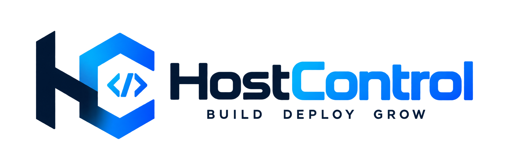
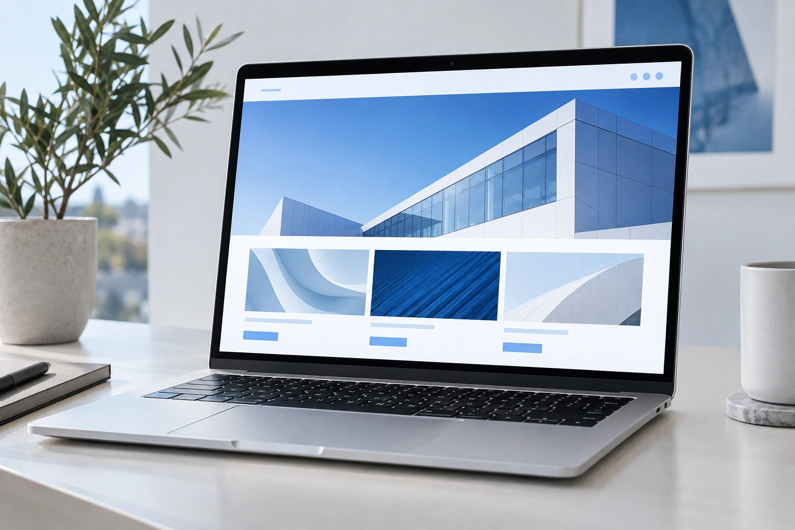
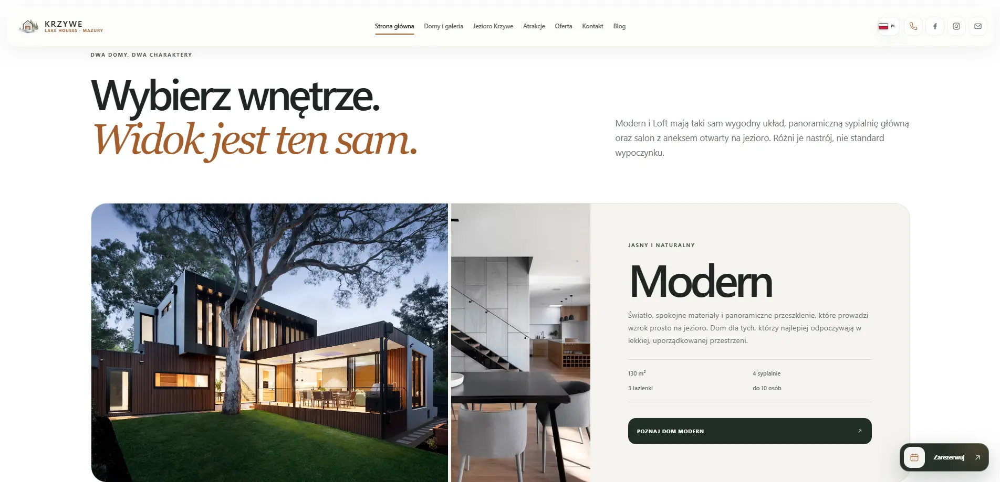
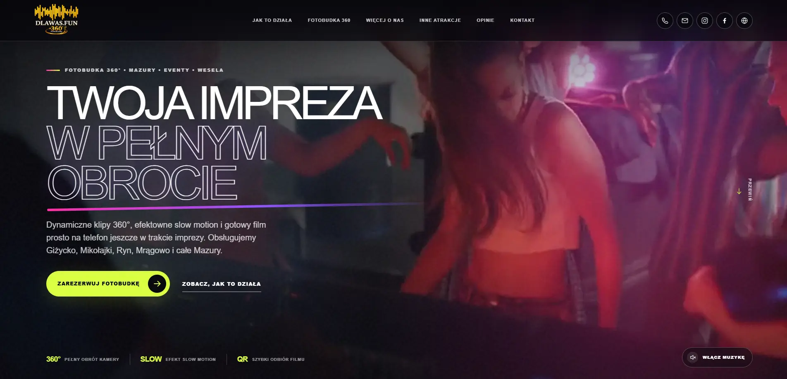

Rozpoznanie
Cel, odbiorcy i zakres
Rozmawiamy o firmie, ofercie i tym, co ma zmienić nowa strona. Ustalamy funkcje, priorytety i realny harmonogram.

Porozmawiajmy↗01 Digital / strony i sklepy
Projektujemy serwisy, które są szybkie, czytelne i gotowe do rozwoju. Łączymy strategię, UX, design, kod i SEO w jeden odpowiedzialny proces.

01 Co możemy zbudować
Nie zaczynamy od wyboru szablonu. Najpierw ustalamy, do kogo mówisz, co ma zrobić użytkownik i jak strona ma wspierać sprzedaż.
01 / STRONA FIRMOWA
Przejrzysty serwis dla firmy, usługi lub marki. Porządkujemy ofertę, budujemy wiarygodność i prowadzimy odbiorcę do telefonu, formularza albo rezerwacji.
02 Jak tworzymy
Wiesz, na jakim etapie jesteśmy, co właśnie powstaje i jaka decyzja jest potrzebna. Bez chaosu i bez znikania po drodze.
Rozmawiamy o firmie, ofercie i tym, co ma zmienić nowa strona. Ustalamy funkcje, priorytety i realny harmonogram.
Układamy mapę strony, kolejność informacji oraz drogę od pierwszego wejścia do kontaktu lub zakupu.
Tworzymy spójny interfejs na komputer i telefon. Pokazujemy działający kierunek przed rozpoczęciem pełnego wdrożenia.
Budujemy szybki front, panel treści, formularze, płatności, rezerwacje lub inne funkcje potrzebne w projekcie.
Sprawdzamy urządzenia, formularze, szybkość, strukturę SEO, dostępność i zachowanie najważniejszych ścieżek.
Uruchamiamy stronę, konfigurujemy analitykę, przekazujemy dostępy i pokazujemy, jak zarządzać treścią.
03 Sklepy internetowe
Projektujemy sklep wokół decyzji zakupowej klienta. Czytelna karta produktu, prosty koszyk i płatność, która nie odciąga uwagi od zakupu.
04 SEO od podstaw
Nie dokładamy SEO na końcu. Struktura adresów, nagłówki, szybkość i dane są częścią projektu od pierwszego szkicu.
Dobra baza techniczna nie zastępuje regularnej pracy nad treścią, ale pozwala jej skutecznie rosnąć.
Indeksacja, mapa strony, metadane, adresy URL, przekierowania i dane strukturalne.
Optymalizacja zdjęć, kodu i ładowania zasobów dla telefonów oraz komputerów.
Logiczna hierarchia informacji, opisy usług i miejsca na dalszą rozbudowę widoczności.
Konfiguracja pomiaru wejść i najważniejszych działań, aby podejmować decyzje na podstawie danych.
05 Własność i bezpieczeństwo
Po zakończeniu nie zostajesz z projektem, którego nie możesz przenieść ani rozwijać. Zasady przekazania ustalamy jasno przed startem prac.
Otrzymujesz dostęp do repozytorium i aktualnej wersji kodu przygotowanego dla projektu.
Domena, hosting, analityka i usługi mogą działać na kontach należących do Ciebie.
Zakres przeniesienia autorskich praw majątkowych do indywidualnych elementów zapisujemy w umowie. Zewnętrzne biblioteki pozostają na własnych licencjach.
Przekazujemy potrzebne dostępy, instrukcję zarządzania i informacje ułatwiające dalszy rozwój.
06 Ile to trwa
Czas zależy od zakresu, dostępności materiałów i liczby integracji. Wybierz rodzaj projektu, aby zobaczyć typowy harmonogram.
Jeden konkretny cel, przemyślana narracja i szybkie wdrożenie. Termin liczymy od zebrania materiałów i zatwierdzenia zakresu.
07 Projekty w praktyce

Turystyka / rezerwacjeKrzywe Lake Houses↗
Eventy / rozrywkaDlaWas.Fun↗Technologia, styl i funkcje wynikają z odbiorcy oraz sposobu, w jaki marka sprzedaje.
08 Plany cenowe
Kwoty są orientacyjne i pomagają zaplanować budżet. Ostateczną wycenę potwierdzamy po krótkiej rozmowie oraz ustaleniu funkcji.
Dla kampanii, nowej usługi albo konkretnej oferty.
Dla marki, która potrzebuje pełnej prezentacji i miejsca do rozwoju.
Dla sprzedaży produktów, usług lub dostępu cyfrowego.
Ceny netto. Integracje płatne, licencje, domena, hosting, przygotowanie dużej liczby treści i rozbudowane funkcje wyceniamy osobno po ustaleniu zakresu.
09 Najczęstsze pytania
Jeżeli nie znajdujesz odpowiedzi, napisz. Odpowiemy konkretnie i bez zobowiązań.
Nie. Możemy uporządkować istniejące materiały, przygotować strukturę treści, zaplanować sesję zdjęciową albo wskazać, czego potrzebujemy do startu.
Tak, jeśli projekt tego wymaga. Dobieramy panel do zakresu i pokazujemy, jak zmieniać teksty, zdjęcia, produkty lub aktualności.
Tak. Możemy pomóc w zakupie, przeniesieniu i konfiguracji. Dane dostępowe oraz konta mogą pozostać po Twojej stronie.
Przekazujemy dostępy i instrukcję. Możemy też zapewnić opiekę, aktualizacje, rozwój kolejnych funkcji i wsparcie marketingowe.
Nie składamy obietnic, których nie da się uczciwie zagwarantować. Budujemy solidną bazę techniczną i możemy dalej rozwijać treści oraz widoczność na podstawie danych.
10 Następny krok
Nie potrzebujesz gotowej specyfikacji. Wystarczy krótka rozmowa o firmie, celu i tym, co ma robić nowa strona.